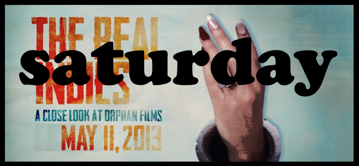
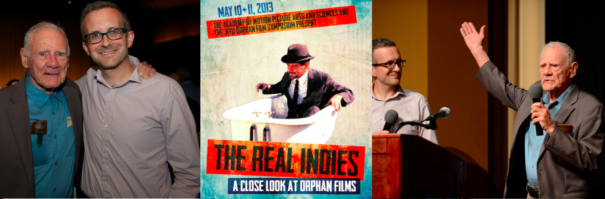
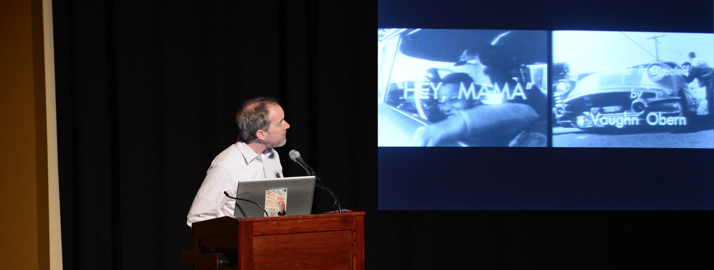
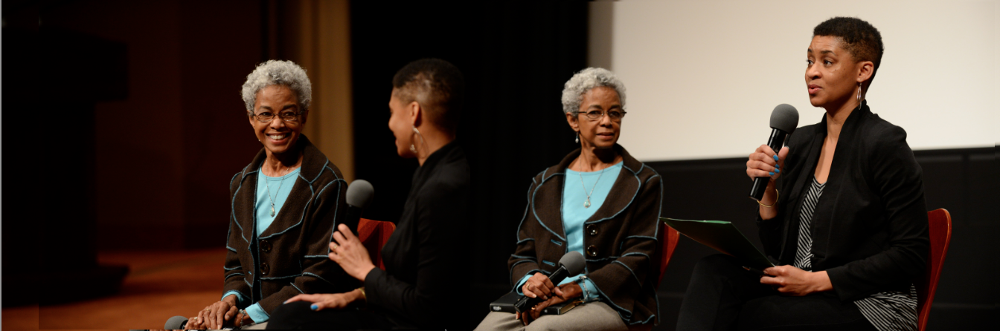
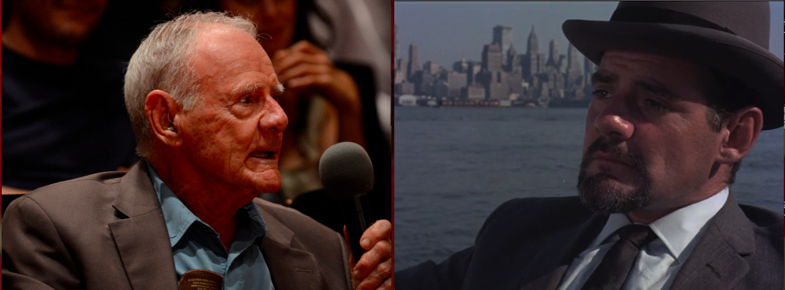

The Academy of Motion Picture Arts and Sciences & NYU Cinema Studies
present

Saturday, May 11, 2013
-
HEY, L.A.
- Pre-show: Countdown snipes, 35mm reel from Walter Forsberg
- When the Organ Played “Oh Promise Me” (Cecil Stokes, ca. 1943) the sole surviving Auroratone. Soundtrack vocal by Bing Crosby. Preserved by Film Technology Co. for the Orphan Film Film Symposium; print owner Robert Marten donated the material to the Academy.
- "Shit Happens: The Salvation of a Lost Student Film." Director Penelope Spheeris and Academy preservationist Mark Toscano discuss and screen her never-before-seen 16mm film Shit (1969).
- Dino Everett (USC Hugh M. Hefner Moving Image Archive) shows Felix Ferdinando and His Orchestra in Musical Moments (Bristolphone, 1929-30), projected on an original Western Electric/Vitaphone 16mm sound-on-disc film projector. From the Herbert E. Farmer Motion Picture Technology Collection.
- City Harvest (OWI, ca. 1943-44) "Victory gardening" in Chicago's ethnic neighborhoods. Heather Linville introduces a new 35mm print from the Academy's War Film Collection.
- What About Thad[?] (Keith Atkinson; BYU Motion Picture Studio, 1968)
+ [Being Alone] (Bonneville Productions, 1980) TV spot for the Church of Jesus Christ of Latter-day Saints. Both introduced by Hadrian Belove (The Cinefamily) - Help! My Snowman's Burning Down (Carson Davidson, 1964) Brian Meacham introduces the Academy's preservation of this Oscar-nominated satire on the Madison Avenue image of the world. Cast: Bob Larkin. 
- Naked Yoga (Paul Cordsen, 1974) Academy Award, Best Documentary Short Subject. Excerpt introduced by Academy curator Ed Carter.
- excerpt from Don't Bank on Amerika (Peter Biskind, Stephen Hornick, & John C. Manning; Cinecong Films, 1970) from University of California Santa Barbara Film Archive. Documentary about the burning of a Bank of America building in Isla Vista, California, Feb. 25, 1970. Introduced by Ross Melnick and Charles Wolfe (UCSB)
- Mission to Mongo (Jim Hoberman, 1978) premiere 16mm screening of the newly-preserved work from Anthology Film Archives. Support from the National Film Preservation Foundation and the Andy Warhol Foundation for Visual Arts. The filmmaker, better known as critic J. Hoberman, assembled postcards from the streets of Chinatown in New York, superimposing political texts in Brechtian fashion. Introduced by Dan Streible, with a nod to the Academy Foundation for funding NYU student internships at Anthology.
- Liz Keim & Sam Sharkey of the Exploratorium's Cinema Arts Program introduce Jon Boorstin, who introduces his film Exploratorium (1974). Premiere screening of the Academy's new 35mm restoration of the museum's eponymous documentary.

Mark Quigley (UCLA Film & Television Archive) Hey Mama (Vaughn Obern, 1969) UCLA student film about Black Venice

Jacqueline Stewart (Northwestern) and artist S. Pearl Sharp
Lead-In for Black Entertainment Television (Saundra Sharp and Thom Eubank, 1981)
CORPORATE ORIENTATION
The cinematic artistry of in-house industrial productions and sponsored films.
Showley Brothers Candy Factory (1924) Source: San Diego History Center. Preserved by the Academy with a grant from NFPF.
Ralph Sargent (Film Technology Co.) introduces a film he directed (uncredited) for the IBM chairman's address to stockholders: Transformations (1968).
Sean Savage (Academy Film Archive) with a version of A New Look for the Bell System (Saul Bass, 1969), re-edited by Bass himself for his own teaching purposes.
Jan-Christopher Horak (UCLA Film & Television Archive and Academy Film Scholar) From Here to There (Saul Bass, 1964), presented by United Airlines at the 1964 New York World’s Fair.
Priya Jaikumar (USC) introduces Two (A Film Fable) (Satyajit Ray, 1964), a short telefilm produced for the syndicated TV series Esso World Theatre. Also known as Parable of the Two. Introduction includes a clip from Jalsaghar (The Music Room), (Satyajit Ray, 1958).
ORPHAN OUTLIERS
10 short film from off the map and under the radar (if not beyond the pale)

Larkin contacted the Academy to report how surprised hew was to find a 49-year-old image of himself on the cover of the Academy calendar that came to his mailbox prior to "The Real Indies." He spoke at the screening about the making of Snowman. Photos: Matt Petit/©A.M.P.A.S.
Thanks to Barbara Hall (Margaret Herrick Library) for digital presentation of glass lantern slides from the Herrick Library collections; and to Mike Pogorzelski (Academy Film Archive).
Adam Hyman (right) announces that scholar-programmer Genevieve Yue presents a lineup of experimental films, including Releasing Human Energies (Mark Toscano, 2012): "China Girls" at the Egyptian Theater in Hollywood, May 12, 2013.

A Los Angeles Filmforum event co-sponsored by the NYU Orphan Film Project.